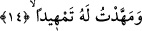
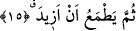

çalışmak üzere Mekke’den babalarının yanından ayrılmazlar, buna ihtiyaç duymazlardı.
“Benîne şuhûden” ifâdesini çeşitli mahfil ve toplantı yerlerinde toplum içinde önde
gelen kimseler olduklarında, itibar sâhibi bulunduklarından dolayı kendisiyle birlikte
bulunan oğullar şeklinde tefsir etmek de mümkündür. Velid b. Muğiyre’nin on tane oğlu
vardı. Bunların üçü; Halid, Hişam, Umara müslüman oldular. Tefsir bilginlerinin ifâdesi
bu yoldadır. Muhaddislerin ifâdesine göre Velid’in oğlu Velid müslüman olurken
yukarda işâret edilen Umâra ya Bedir savaşında ya da Habeşistan’da Necaşi eliyle kâfir
olarak katledildi. Süheyli (rh.)’ın ifâdesine göre Velid’in müslüman olan çocukları
Hişam, Velid, “Seyfullah” lakâbını alan Hâlid b. Velid’dir. Bu üç oğulun dışındakiler
ise câhiliye dini üzere öldüler. Bunların isimlerini burada anmıyoruz.
14. Kendisi için (nimetleri önüne) serdikçe serdiğim (o kimseyi bana bırak!)
Kendisine riyaset/başkanlık verdiğim geniş bir mevki sağladığım ve bunun sonucu
olarak nimetimi tamamladığım kimseyi bana bırak. Çünkü mal ile mevkiin bir elde
toplanması dünya ehli nazarında kemal mertebesinin ta kendisidir. Bu nedenle kendisine
Kureyş’in reyhanı denilmiştir. Reyhan bilindiği üzere hoş kokulu bir bitkidir. Kureyş’in
reyhanı ise çocuk ve maldır.
et-Tevilâtü’n-necmiyye bu âyet-i kerîmeden şöylesi işâretler çıkarıyor: Burada Velid
b. Muğiyre ile kötülük, zulüm, cevr, cehâlette biricik olan nefse ve onun kötü amel ve
mallarının çokluğuna, kötü ahlâkının sağladığı cins cins servete, onun ardına takılan
düşük aşağılık pis tâbilerinin oğullarına, onun hakkın emirlerine ve yasaklarına baş
kaldırmış nefis sâhipleri nezdindeki servetine, saltanatına riyasetine ve mertebesine
işâret olunuyor. Bu âsî nefisler zulmânî tabîat güçleridir. İşte buradan deniyor ki: Beni
onunla başbaşa bırak. Çünkü ben onun üzerine gizli olan Ebû Bekr’i, Ruh olan Ömer’i,
sır olan Osman’ı ve kalb olan Ali’yi musallat ederim. Tâ ki onlar rûhâniyetlerinin nûru
ile nefsâni karanlıkları yok edip ortadan kaldırır. Onların amellerini değiştirirler,
arkalarından giden oğullarını, taraftarlarını katlederler, saltanatlarını dürerler,
servetlerinin gelmiş olduğu kapıyı tıkarlar.
15. Üstelik o (nimetlerimi) daha da arttırmamı umuyor.
“Üstelik o” kendisine verdiğim mal ve çocuk üzerine “daha da arttırmamı umuyor.”
Âyette yer alan “sümme” onun bu tamahını ve hırsını “istib’ad/uzak görme”